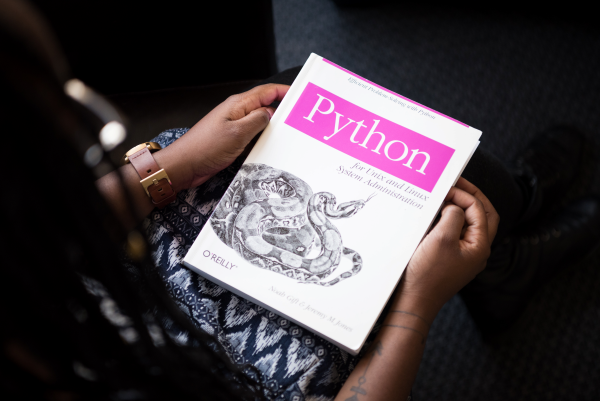

PORTFOLIO



Hola, soy Carlos Yasser. Encantado de darles la bienvenida a mi portafolio web. Recientemente he completado un curso de un año en programación web, donde he adquirido conocimientos sólidos y habilidades en diferentes tecnologías y lenguajes de programación. A través de esta página, quiero compartir con ustedes mi pasión por el desarrollo web y mostrarles los proyectos en los que he trabajado. Estoy emocionado por compartir mi trayectoria en el desarrollo web y espero que encuentren inspiración en mis proyectos. No duden en contactarme si desean más información o colaborar en futuros proyectos. ¡Disfruten explorando mi portafolio! Bienvenidos,.
UN curso de 350 horas en las que se incluyen estudios de HTML5, CSS, BootStrap, Javascript, SQL y Python. En este mismo período hice un curso de Low_Code con Mendix de 300horas
Fueron tres años adquiriendo los conocimientos necesarios para graduarme como Técnico medio en informática. Durante este periodo, me formé en diversas áreas, como REDES, para la creación de sistemas de redes LAN, la administración de servidores y el manejo de software y hardware. También obtuve habilidades en el mantenimiento de estos sistemas, así como conocimientos básicos en seguridad informática. Además, adquirí experiencia en programación en lenguajes como Visual Basic y Pascal.
Realicé un curso intensivo de inglés durante dos años, el cual combiné con mis estudios como Técnico Informático. Durante este curso, conté con el asesoramiento de varias empresas comerciales del país, lo que me permitió mejorar mi nivel de inglés y adquirir habilidades comunicativas en el idioma.
Comencé la carrera de Ingeniería en Telecomunicaciones y Electrónica con entusiasmo. Sin embargo, debido a circunstancias personales, tuve que interrumpir mis estudios a mitad del segundo año. Aunque no pude completar la carrera, la experiencia me brindó una base sólida de conocimientos en el campo de las telecomunicaciones y la electrónica, que sigo utilizando en mi desarrollo profesional.
Típico empleo de operario en fábricas, en este caso Pick and Stow.
En hostelería ejercía de Entrenador, siendo mi función enseñar y evaluar a todo nuevo empleado; principalmente en el funcionamiento del restaurante, trato con el cliente, trabajo en caja, en cocina, el mantenimiento de equipos, seguridad laboral, mostrarles cómo ser constantes, dinámicos y el trabajo en equipo.
En mi primer trabajo como Informático, me dediqué principalmente a la reparación de ordenadores y a la atención a usuarios para solucionar incidencias en la oficina. También tuve la responsabilidad de realizar el mantenimiento de todos los equipos y de crear nuevas redes LAN.
En mis dos empleos como Informático, desempeñé diversas funciones relacionadas con el mantenimiento, reparación, seguridad y control de ordenadores. Además, tuve la responsabilidad de operar servidores de correo electrónico y utilizar herramientas informáticas como Photoshop para crear publicidad. También participé en la asistencia, preparación y evaluación de nuevos empleados, asumiendo el rol de jefe de departamento y supervisor de un equipo de más de 20 técnicos informáticos.
En mis dos empleos como Informático, desempeñé diversas funciones relacionadas con el mantenimiento, reparación, seguridad y control de ordenadores. Además, tuve la responsabilidad de operar servidores de correo electrónico y utilizar herramientas informáticas como Photoshop para crear publicidad. También participé en la asistencia, preparación y evaluación de nuevos empleados, asumiendo el rol de jefe de departamento y supervisor de un equipo de más de 20 técnicos informáticos.